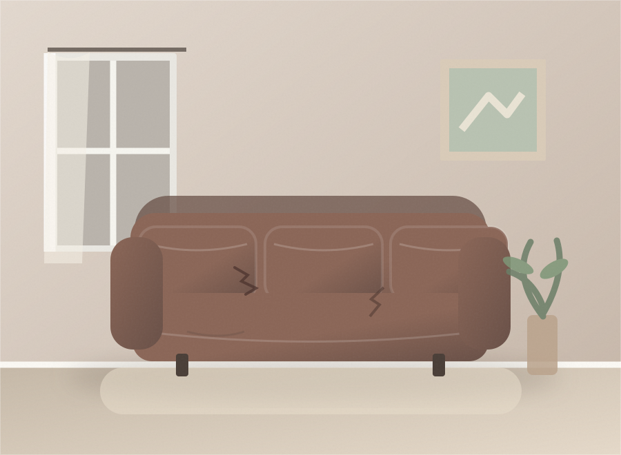

У любимых вещей бывает вторая жизнь.
Диван потерял вид? Кресло нуждается в ремонте? Обновим обивку, наполнитель и детали — сохраняя то, что вам дорого.
обивочных тканей
по согласованию
покупки нового

Не спешите расставаться.
От одной потёртой подушки до полной реставрации. Для каждого предмета подбираем подходящий материал и объём работ.
Новая ткань.
Новый характер.
Например, диван с потрескавшейся экокожей можно обновить фактурной рогожкой. Именно такую работу мастерская показывала 13 ноября.


У каждой вещи
своя история.
Ткань меняет
не только цвет.
Рогожка, велюр, шенилл, флок, экокожа и другие фактуры. Подберём обивку под интерьер, привычки и назначение мебели.
Посмотреть материалыОт фотографии
до обновлённой мебели.
Не нужно сразу знать метраж ткани или способ ремонта. Начните с фотографии и короткого описания — детали можно обсудить с мастером.
Покажите мебель
Выберите тип изделия и приложите фото. Укажите, что хотите изменить.
Обсудите детали
Мастер уточнит состояние, ткань, размеры и предварительную стоимость.
Согласуйте работу
Варианты материалов, выезд и перевозку согласуют индивидуально.
Встречайте обновку
Любимая мебель вернётся к вам в новом облике.
Прежде чем
решиться.
Стоимость и сроки зависят от конкретного изделия, ткани и необходимости внутреннего ремонта.
Можно узнать стоимость по фотографии?
Да, мастерская заявляет предварительную онлайн-оценку по фото. Для уточнения цены могут потребоваться размеры, сведения о повреждениях и осмотр.
Привозите ли вы образцы тканей?
В описании сообщества заявлен выезд специалиста с образцами. Условия выезда в ваш населённый пункт и время стоит уточнить напрямую.
Какие города обслуживаете?
В сообществе указаны Коломна, Воскресенск, Раменское и Жуковский. Возможность выезда в другие населённые пункты уточняйте по телефону.
Есть ли гарантия?
Мастерская указывает гарантию до трёх лет. Конкретные условия и перечень работ, на которые она распространяется, следует согласовать до заказа.